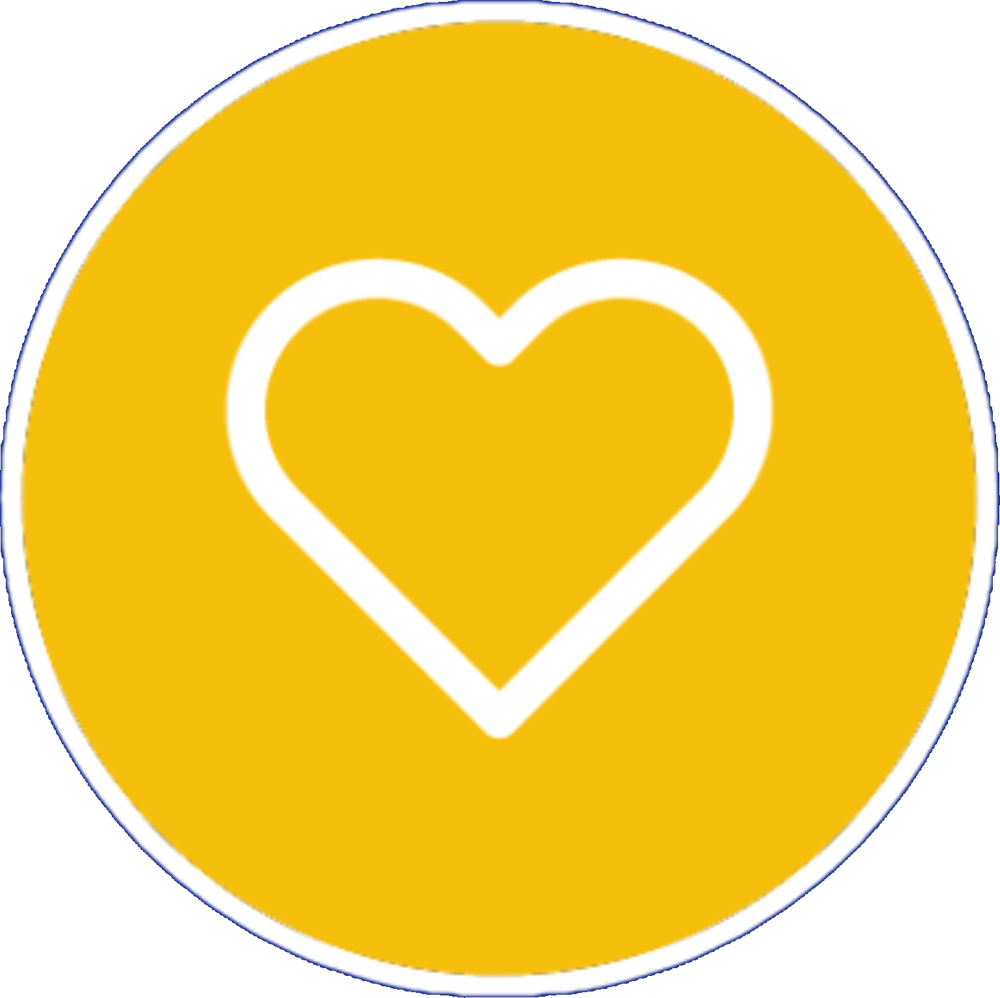
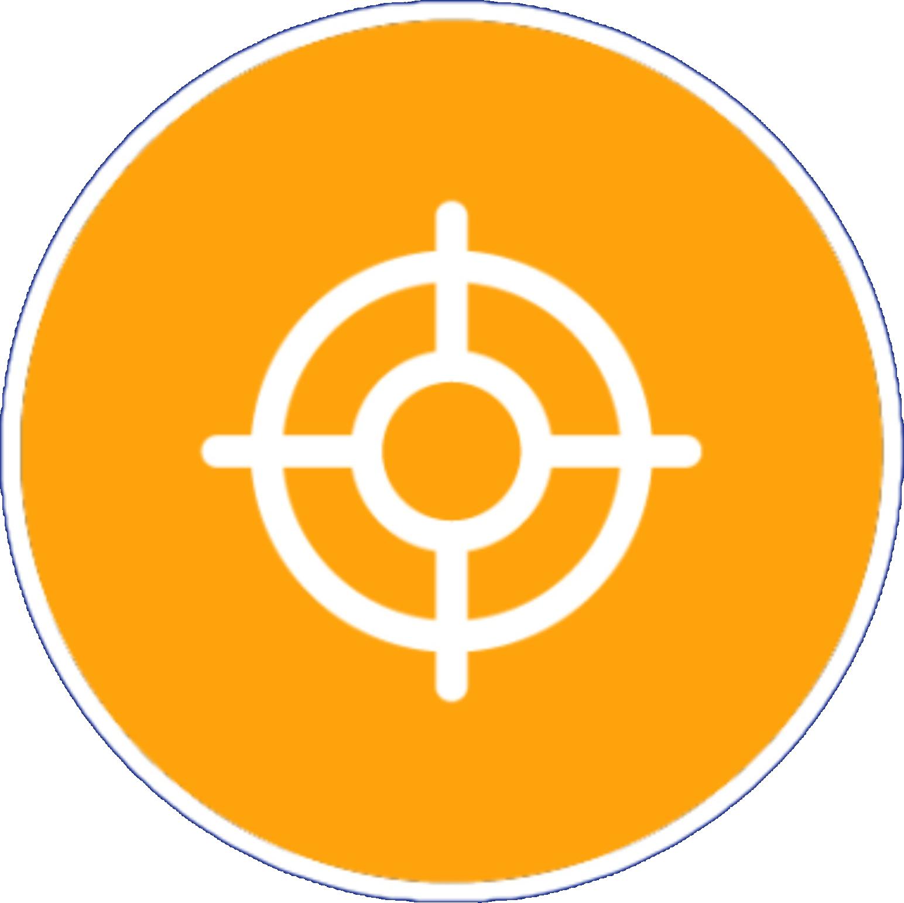
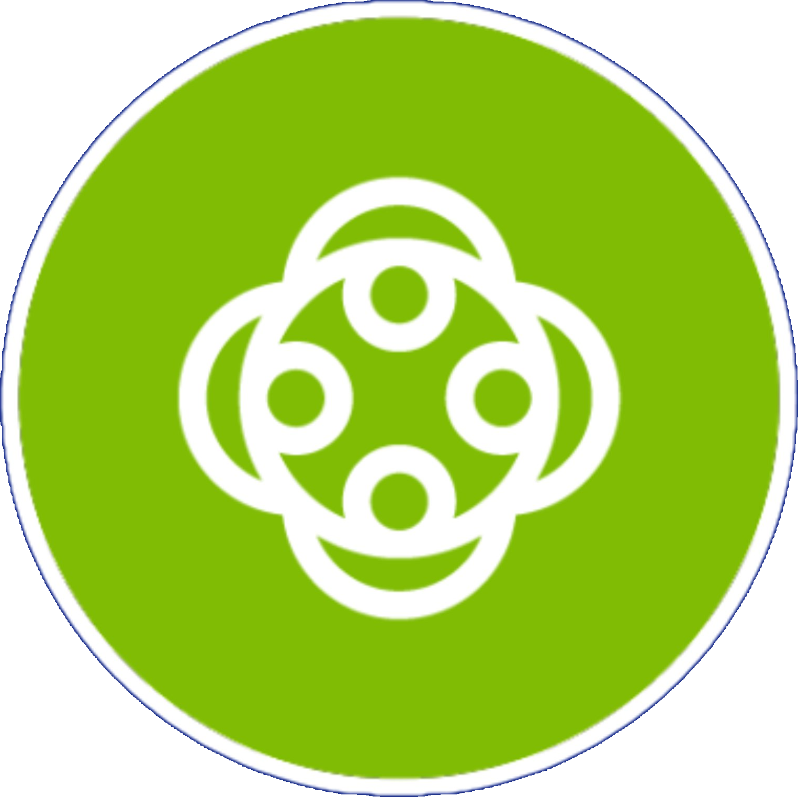
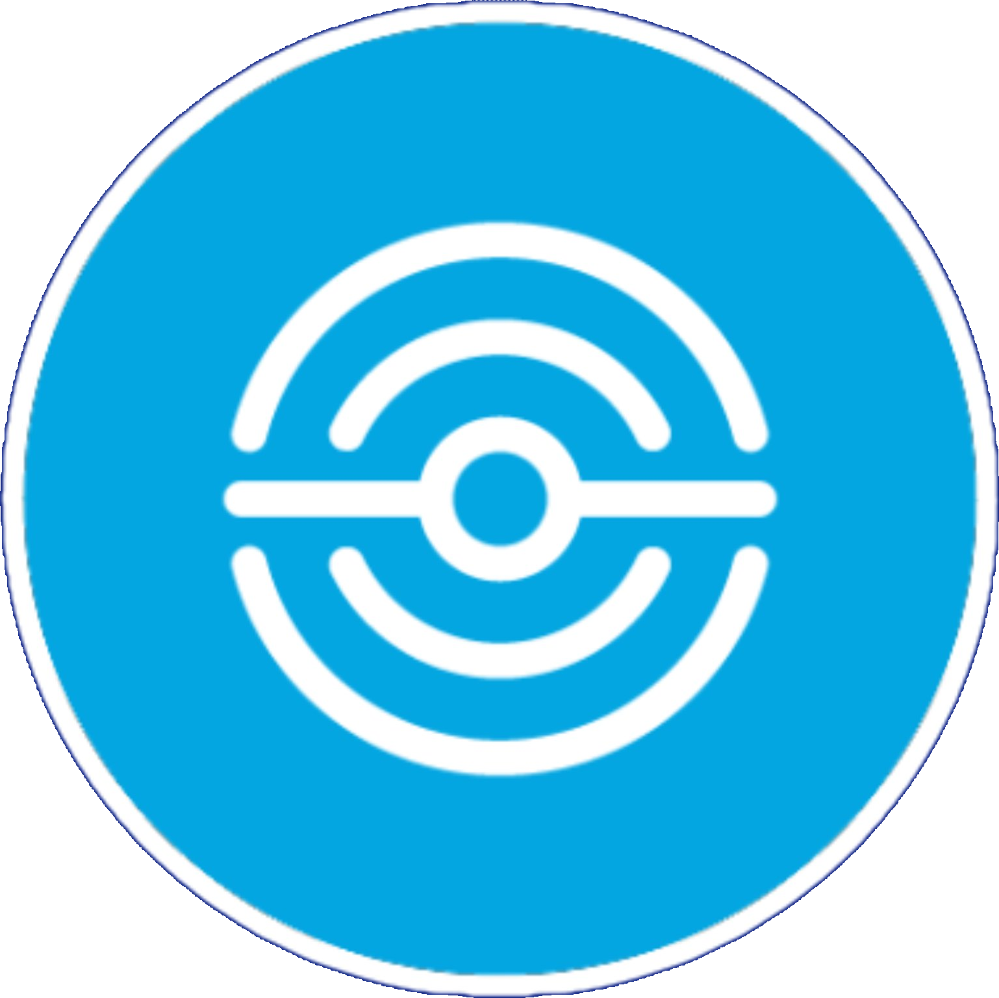
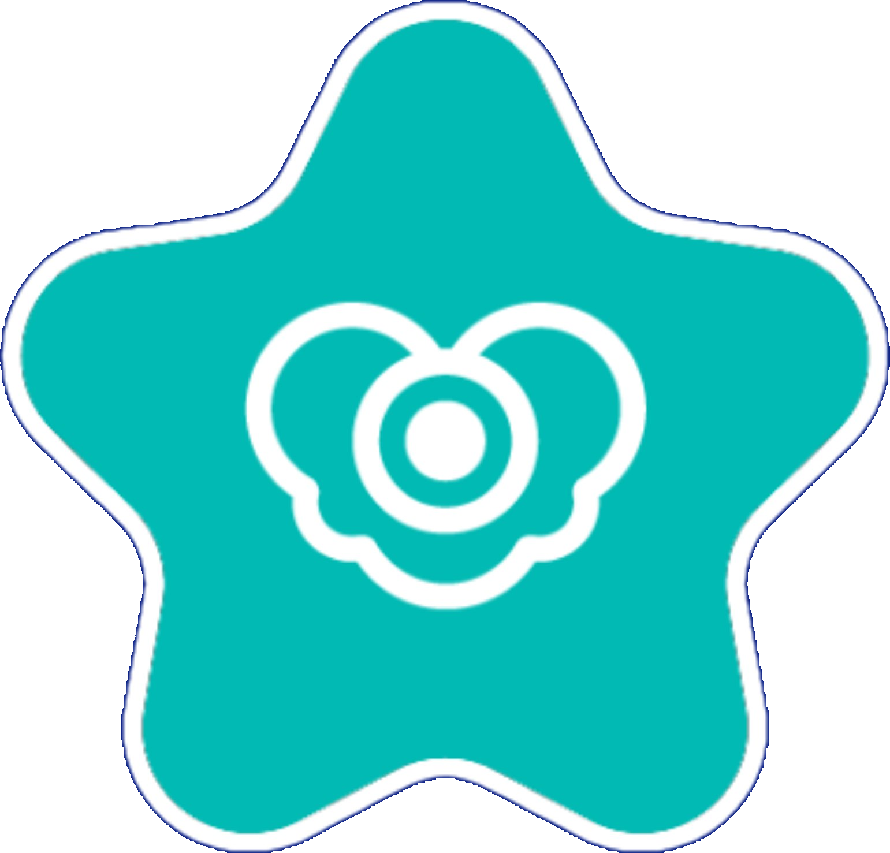
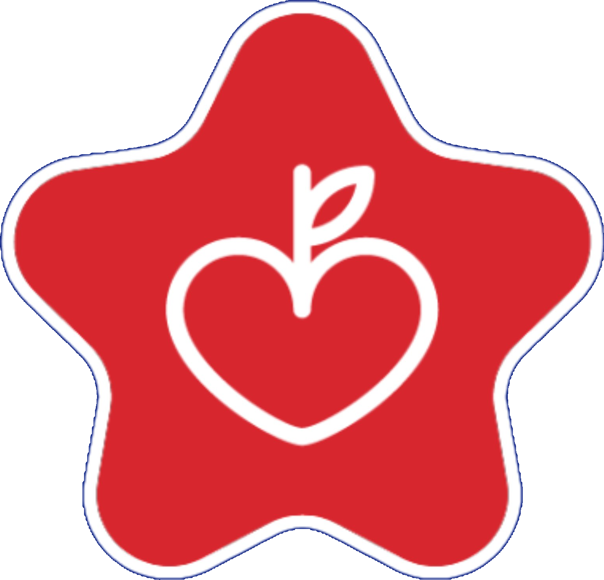
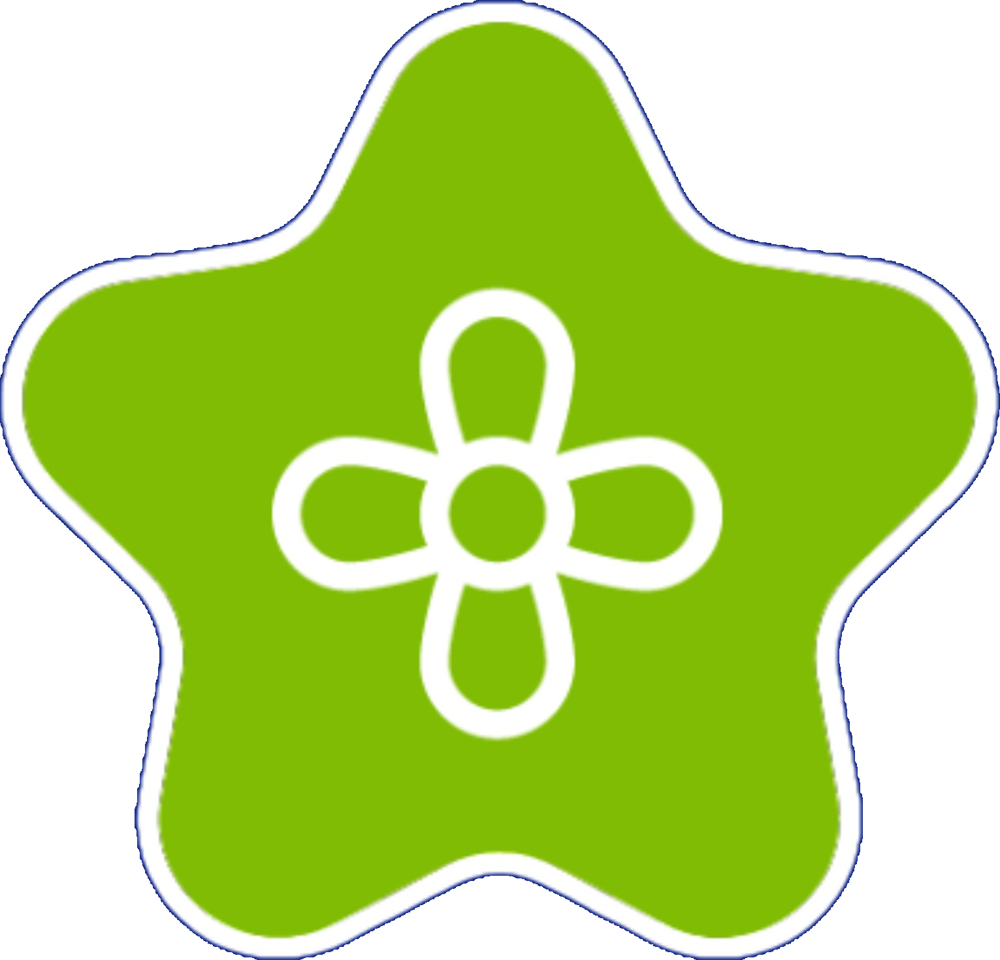
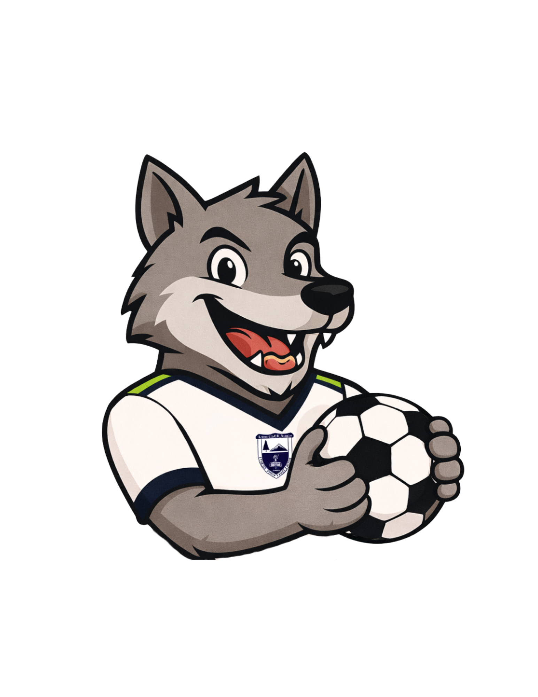
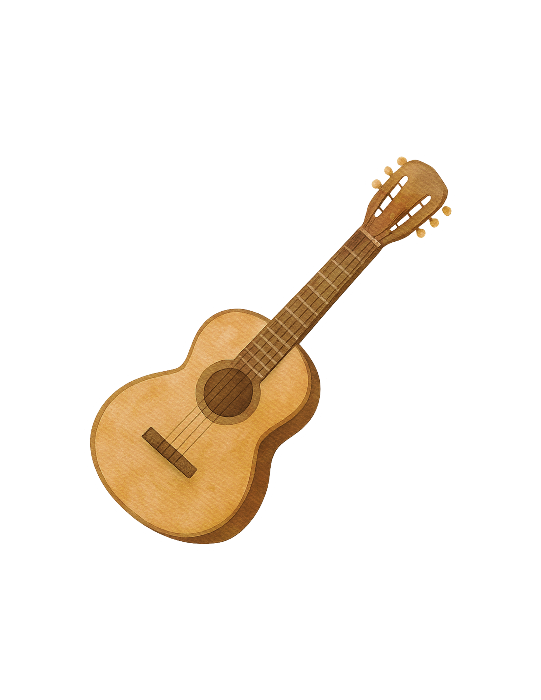
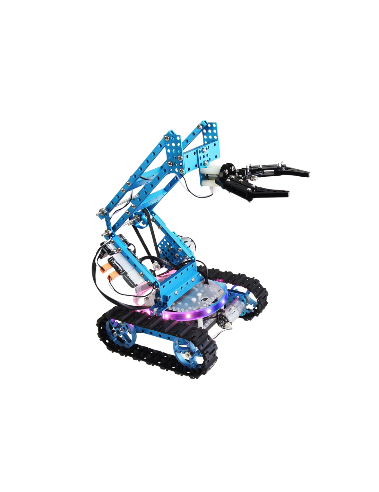

Un ecosistema diseñado con un solo propósito: poner al alumno al centro de todo.
Con más de 20 años de experiencia educativa, Knotion® ha desarrollado un modelo pedagógico basado en el pensamiento de diseño que construye competencias auténticas para la vida y fomenta una nueva cultura de aprendizaje en los estudiantes.
Su Gran Idea es empoderar a los estudiantes para tomar decisiones más sabias, capaces de generar un impacto positivo a través de sus acciones: pensar, sentir y actuar de manera diferente para construir un mundo mejor.
El modelo provee un entorno en el que los alumnos resuelven retos transdisciplinarios mientras construyen una comprensión real y profunda del mundo que los rodea, desarrollando una identidad propia y el compromiso firme de impactarlo positivamente.
Fruto de más de dos décadas de investigación y práctica educativa, diseñado por un equipo de pedagogos, científicos y pensadores globales.
El aprendizaje ocurre en un contexto de realidad, enfrentando retos alineados con los 17 Objetivos de Desarrollo Sostenible de la Agenda 2030.
Integra estándares curriculares con herramientas digitales de alto nivel, desarrollando competencias ciudadanas globales en cada alumno.
Las materias se integran en torno a retos reales, garantizando que el conocimiento adquirido sea relevante, transferible y con propósito.
Cuatro etapas que guían al alumno en la resolución de retos transdisciplinarios reales, desde la identificación del problema hasta la acción concreta que impacta su comunidad.

#1El alumno reconoce y comprende un problema global, desarrollando conciencia y sensibilidad ante los retos del mundo real.

#2A través de la investigación, el alumno profundiza en el problema, explorando causas, consecuencias y posibles perspectivas.

#3El alumno genera una propuesta de solución creativa y fundamentada, poniendo en práctica su pensamiento crítico e innovador.

#4El alumno lleva su propuesta a la acción, creando algo concreto que contribuya a la posible solución del reto planteado.
Programas diseñados específicamente para cada edad, con ejercicios diarios que apoyan el bienestar general y el desarrollo interior de los alumnos.

Manejo de emociones a través de la tecnología HeartMath. Los alumnos desarrollan inteligencia emocional, salud mental y la capacidad de enfocarse, traducida en mayor resiliencia, empatía y claridad en la toma de decisiones.

Hábitos saludables desde temprana edad. Los alumnos aprenden la importancia de mantener una vida activa y sana, adquiriendo hábitos de nutrición que los acompañarán toda la vida.
Cultura financiera diseñada para superar sesgos cognitivos sobre cómo se percibe el mundo y cómo se toman decisiones financieras inteligentes desde una edad temprana.

Cuidado del ambiente. Los alumnos exploran temas que van desde el reciclaje hasta la comprensión de los ecosistemas y sus elementos naturales, fomentando una conciencia ecológica activa.
Ambientes diseñados para desarrollar habilidades y destrezas vitales que permiten a los alumnos interactuar de manera exitosa y positiva con el mundo exterior, formando ciudadanos del siglo XXI.
Identificar, evaluar y resolver problemas o necesidades de la vida real con creatividad y fundamento.
Participar activamente en espacios digitales de manera respetuosa y segura, comprendiendo su potencial y sus riesgos.
Comprender, analizar y localizar información en una variedad de formatos con criterio y conciencia crítica.
Desarrollar proyectos con éxito a través de habilidades de colaboración, liderazgo, responsabilidad y manejo de herramientas digitales.
Habilidades para convertirse en ciudadanos responsables que conviven de manera pacífica y activa en una sociedad democrática.
Relacionarse de manera efectiva a través de distintos formatos, para diferentes audiencias, en un ambiente global.
Desde preescolar hasta secundaria, el ecosistema Knotion se adapta al desarrollo natural de cada etapa del alumno.
En preescolar, el aprendizaje se integra a través del Global Journey, un viaje cultural por el mundo que despierta la curiosidad y amplía la visión de los estudiantes desde sus primeros años, dentro de un ecosistema bilingüe, interactivo y transdisciplinario.
El proceso de alfabetización se trabaja mediante el Modelo FAS (Fonético Analítico Sintético), que garantiza el desarrollo del trazo y fortalece tanto el sistema grafomotor como el neurolingüístico. K1 se organiza en 4 unidades centradas en el entorno del niño; K2 y K3 amplían a 8 unidades con perspectiva global.
En primaria, los alumnos participan en actividades inmersivas que abarcan aspectos cognitivos y reflexivos. El maestro adopta un rol de coach multidisciplinario, impartiendo las materias en torno a un reto o tema de interés global.
Los ocho proyectos del año giran en torno a los Global Issues de Knotion. Al inicio de cada proyecto, preguntas detonadoras motivan a los alumnos a investigar y profundizar, haciendo que el aprendizaje ocurra en todo momento de la vida del alumno.
En secundaria, las materias actúan de manera transversal para la resolución de un reto común. Los mismos ocho Global Issues se abordan con mayor profundidad y complejidad, acorde a la etapa del estudiante.
Las planeaciones aportan contenido orientado a la acción concreta que resuelve el reto, respetando el esquema de horas específicas para cada materia. El alumno desarrolla habilidades del siglo XXI preparándose para la vida.
El Liceo Carl Ransom Rogers cuenta con herramientas y alianzas que potencian el aprendizaje de cada alumno más allá del aula.
Desarrolla velocidad, comprensión y confianza a través de ejercicios dinámicos, lecturas variadas y retos por niveles, con retroalimentación inmediata que mantiene a los alumnos motivados.
Aprende cómo piensa cada estudiante y ajusta las lecciones en tiempo real, llevándolo exactamente al nivel que necesita, desarrollando estrategias matemáticas propias con confianza.
Con más de 1,800 títulos y evaluaciones integradas, rastrea el progreso de cada lector y actualiza su selección automáticamente, asegurando que siempre encuentren algo que los apasione.
Medición y Avance en Razonamiento y Solución de Problemas Académicos. Mide el desarrollo de habilidades matemáticas y pensamiento crítico, preparando a los alumnos para desafíos reales.
El iPad no es un dispositivo de entretenimiento: es una herramienta de aprendizaje administrada y supervisada en todo momento por el coach.
A través de la herramienta MDM (Mobile Device Management), el coach gestiona los dispositivos de manera remota, decidiendo qué aplicaciones están disponibles, qué restricciones aplican dentro del aula y qué sitios web se bloquean.
El tiempo de uso varía según el nivel y la actividad del día, siempre equilibrado con otras dinámicas de aprendizaje presencial y colaborativo.
Además del programa académico, el Liceo ofrece diversas academias que permiten a los alumnos desarrollar habilidades y pasatiempos, promoviendo el trabajo en equipo, la creatividad y el bienestar personal.

Academia de fútbol en alianza con Tuzos Pachuca, formando jugadores con metodología profesional desde temprana edad. Una experiencia que combina deporte, disciplina y trabajo en equipo.

Nuestra Rondalla es un espacio para descubrir y desarrollar el talento musical. Una oportunidad para que los alumnos expresen su creatividad a través de la música y las artes.

LEGO Science, Robótica con Inteligencia Artificial, regularización de materias, inglés y más. Actividades diseñadas para potenciar el aprendizaje y las habilidades digitales del siglo XXI.